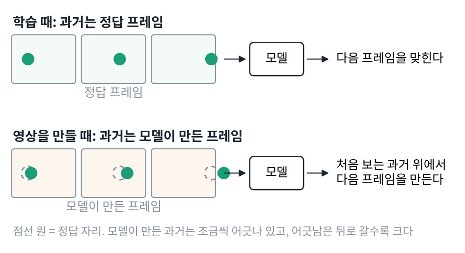
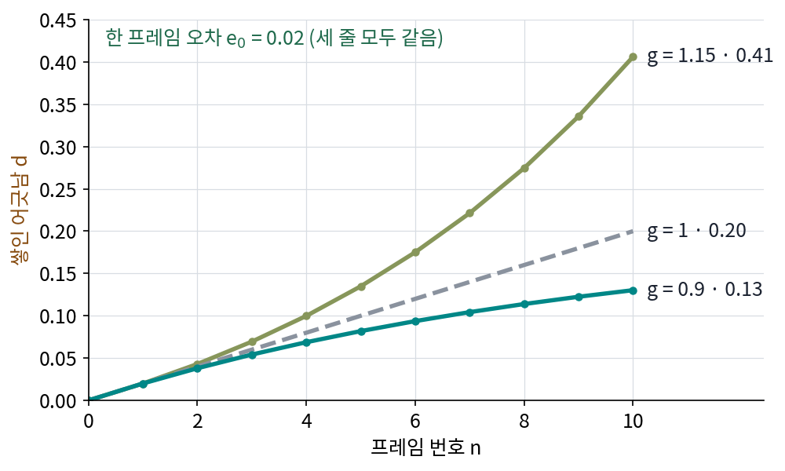

노출 편향: 정답 과거로만 배우면 생기는 일
자기회귀 모델은 어떻게 학습할까? 가장 쉬운 방법은 학습 영상의 앞 프레임들을 그대로 넣어 주고 다음 프레임을 맞히게 하는 것이다. 앞 프레임은 이미 데이터에 있으니, 영상 한 편으로 프레임마다의 문제를 한꺼번에 낼 수 있다. 이렇게 학습 때 과거를 모델의 출력이 아니라 데이터의 정답에서 가져오는 방식을 티처 포싱 (정답 과거로 배우기 / teacher forcing)이라 한다. 선생님(teacher)이 매번 바른 과거를 쥐여 준다는 이름이다. 그런데 영상을 만들 때는 정답 과거가 없다. 모델은 자기가 방금 만든, 조금씩 틀린 프레임을 딛고 다음 프레임을 만들어야 한다. 학습 때 한 번도 받아 보지 못한 입력이다.
아래 그림에서 공은 프레임마다 오른쪽으로 일정하게 움직인다. 학습 때 모델이 받는 과거와 영상을 만들 때 받는 과거를 위아래로 놓았다.

역사: 정답을 넣어 주는 학습과 그 대가에 이름이 붙기까지
정답을 입력으로 넣어 주는 방식은 순환 신경망(자리를 하나씩 지나며 내부 상태를 이어 가는 신경망) 시절에 이름을 얻었다. 1989년 윌리엄스(Ronald J. Williams)와 집서(David Zipser)는 순환 신경망을 멈추지 않고 돌리면서 학습시키는 방법을 내놓으며, 신경망이 제 출력 대신 정답(선생님 신호)을 다음 계산에 쓰게 하는 기법에 티처 포싱이라는 이름을 붙였다. 두 사람이 지어낸 기법은 아니었다. 그들은 이 기법이 조던(Michael I. Jordan, 1986)과 피네다(Fernando Pineda, 1988)의 연구에서 이미 자주 쓰이고 있다고 적었다. 제 출력이 틀리면 그 틀린 값이 다음 계산으로 이어지니, 학습 중에는 매 걸음 정답으로 바로잡아 주는 편이 배우기 쉬웠던 것이다.
학습이 빠르고 안정적이라 티처 포싱은 그 뒤 시퀀스 모델의 표준 학습법이 되었다. 대가는 한동안 이름 없이 남았다. 문장을 한 낱말씩 쓰는 기계 번역과 그림 설명 모델이 커지면서 그 대가가 드러났다. 2015년 페이스북 AI 연구소의 란차토(Marc’Aurelio Ranzato)와 동료들은 학습 때는 데이터의 앞 낱말만, 생성 때는 모델 자신의 앞 낱말을 받는 이 불일치에 이름을 붙였다. 모델이 데이터의 분포에만 「노출」되고 자기 예측에는 노출되지 않아서 생기는 치우침이라는 뜻이다(논문은 이듬해 ICLR 2016 에 실렸다).
장난감 예제: 어긋남이 쌓이는 빠르기
그 치우침이 영상에서는 얼마나 클까? 가장 단순한 모형으로 세어 보자. 프레임을 하나 만들 때마다 정답에서 작은 오차 e₀만큼 어긋난다고 하자. 앞 프레임까지 쌓인 어긋남 dn은 다음 프레임에 그대로 넘어가지 않는다. 모델이 어긋난 입력을 어떻게 다루느냐에 따라 g배가 되어 넘어간다.
티처 포싱으로 배운 모델은 어긋난 과거를 본 적이 없다. 처음 보는 입력에서는 원래 오차에 엉뚱한 반응까지 얹으므로 g > 1이 되기 쉽다. e₀ = 0.02, g = 1.15이면 10번째 프레임에서 d10 ≈ 0.41이다. 오차를 그냥 더하기만 했다면(g = 1) 0.20이었을 것이다. 반대로 어긋난 자기 과거 위에서 배운 모델은 그런 입력에서 제자리로 돌아오는 법을 배웠으므로 g < 1이다. g = 0.9이면 10번째 프레임에서 0.13이다.

세 모델의 한 프레임 오차는 같다. 달라진 것은 어긋난 과거를 받았을 때의 반응 하나다. 학습 때 정답 과거만 보고 배워 생성 때 자기 과거를 처음 만나는 이 불일치를 노출 편향 (정답 과거에만 노출된 치우침 / exposure bias)이라 한다. 그 결과로 프레임을 이어 갈수록 어긋남이 불어나는 것을 오류 누적(error accumulation, 영상 논문에서는 drift라고도 부른다)이라 한다. 처음 몇 초는 멀쩡하던 영상이 점점 색이 바래거나, 지나치게 선명해지거나, 인물이 뭉개지는 것이 이것이다.
위젯의 처음 값은 위 그림과 다르다. 두 모델의 g를 1 근처로 바짝 붙여도 프레임 수를 늘리면 두 줄이 얼마나 벌어지는지 보자.
ML에서: 영상에서는 왜 더 심한가
언어모델에서 노출 편향이 그럭저럭 견딜 만했던 데는 까닭이 있다. 토큰은 몇만 개 가운데 하나를 고르는 값이라, 조금 틀려도 다음 입력은 여전히 「있을 법한 토큰 하나」다. 영상 프레임은 연속값이다. 작은 오차가 그대로 다음 입력에 섞이고, 1초에 열여섯 장이면 1분에 수백 장이 쌓인다. 자기회귀 영상 모델이 짧은 영상에서는 전체 시퀀스 모델에 버금가다가 길어지면 무너지는 까닭이 여기 있다.
문제 3. 늘 바로잡힌 자리에서 출발한 연수
운전 연수 내내 강사가 보조 브레이크와 보조 핸들로 차를 차선 한가운데로 돌려놓은 뒤에야 학생에게 핸들을 맡겼다. (가) 학생이 연습한 장면은 모두 어떤 자리에서 시작했는가? 혼자 운전하는 첫날, 학생이 처음 겪게 되는 상황은 무엇인가? (나) 연수 기록에는 「핸들을 맡긴 뒤 3초 동안 차선을 지킨 비율 99%」라고 적혀 있다. 이 숫자가 혼자 운전하는 실력을 말해 주는가?

(가)는 늘 차선 한가운데요. 그런데 혼자 운전해도 처음엔 차선 한가운데서 출발하잖아요. 똑같은 거 아니에요?

혼자 운전한 지 10초 뒤, 차는 어디에 있죠?

아… 제가 조금씩 틀어 놓은 자리요. 강사님이 바로잡아 주지 않으니까 다음 순간은 제 실수 위에서 시작하네요. 차가 한쪽으로 치우친 채 핸들을 잡는 건 연수 때 한 번도 없었어요.

(나)는 99%가 어떤 출발점들에서 잰 비율인지 봐야 해. 출발점이 전부 차선 한가운데면, 그건 「한가운데서 3초 버티기」 성공률이지.

그래요. 그럼 혼자 운전할 때의 출발점들은 어떻게 생겼을까요?

앞 3초 동안 제가 만든 자리들이요. 한가운데가 아닌 출발점이 섞이는데, 그런 자리에서의 성공률은 기록에 한 번도 잡힌 적이 없어요. 99%는 연수 때의 출발점에서만 맞는 숫자예요.

조교님이 매번 첫 줄을 고쳐 준 코드로만 채점받은 셈이네요. 혼자 짜면 첫 줄이 틀린 채로 그다음 줄을 짜야 하는데요.
문제 4. 20번째 프레임의 어긋남
프레임마다 오차 e₀ = 0.02가 생긴다. (가) 티처 포싱으로 배운 모델(g = 1.15)의 20번째 프레임 어긋남 d20을 구하시오. (나) 자기 과거로 배운 모델(g = 0.9)의 어긋남은 프레임이 한없이 길어지면 어디로 가는가? 풀었으면 위젯 1의 「문제 4 불러오기」로 맞춰 본다.

0.02씩 스무 번이니까 0.4요.
민준 학생, 그 계산은 g가 얼마일 때의 답이죠?
1일 때요… 앞 프레임의 어긋남이 1.15배가 되어 넘어가는 걸 뺐네요. 식대로 하면 0.02 × (1.15²⁰ − 1)/0.15, 코드로 돌리면 2.049예요. 다섯 배가 넘어요.
(나)는 극한을 보면 돼. g = 0.9면 gⁿ이 0으로 가니까 dn은 e₀/(1 − g) = 0.2로 가.
두 모델의 한 프레임 오차 e₀는 같았어요. 무엇이 둘의 운명을 갈랐죠?
공비 하나요. 등비급수가 수렴하느냐 발산하느냐가 공비로 갈리는 거네요. 첫째 항은 같아도요. 한 프레임의 오차보다 어긋난 과거에 대한 반응이 긴 영상을 정해요.
첫 주 과제에서 한 실수를 다음 과제가 그대로 가져다 쓰면, 학기 말엔 원래 실수보다 훨씬 커져 있는 거랑 같네요.
문제 5. 1분짜리 영상은 몇 걸음인가
Wan2.1 의 VAE 처럼 프레임을 넷씩 묶은 잠재 프레임 위에서 한 장씩 이어 만드는 모델이 있다. 1초에 16장으로 1분짜리 영상을 만든다. (가) 잠재 프레임으로 몇 걸음을 이어 가는가? (나) 잠재 프레임 하나의 오차가 e₀ = 0.002로 작고, 정답 과거로 배운 모델의 g가 1.01로 1에 아주 가깝다. 5초(잠재 프레임 21장)와 1분 끝에서 쌓인 어긋남은? (다) g = 0.99인 모델이면? (라) 5초짜리 영상만 보고 모델을 고르면 무엇을 놓치는가? 위젯 1의 「문제 5 불러오기」로 확인한다.
960장을 넷씩 묶으니까 240걸음이요. 아, 첫 프레임은 혼자라 1 + 959 ÷ 4… 959가 4로 안 나눠지네요. ComfyUI 식대로 (960 − 1) ÷ 4를 내림해서 1을 더하면 240이에요.
(나)는 g가 1.01이면 거의 1이니까 그냥 더하는 거랑 비슷하겠죠. 240 × 0.002 = 0.48쯤이요.
5초 지점은 어떻게 나와요? 그리고 1.01을 240번 곱하면요?
5초는 0.0465로 더하기만 한 값(0.042)과 거의 같아요. 그런데 1.01²⁴⁰이 10.9라서 1분 끝은 1.98이에요. 더하기만 한 값의 네 배가 넘어요. 1에 가까워도 240번이면 안 되네요.
(다)는 5초에서 0.0381, 1분 끝에서 0.182야. 한계 e₀/(1 − g) = 0.2 아래에 머물고.

그럼 (라)는… 5초에서는 두 모델이 0.047과 0.038이라 거의 못 가르겠다. 1분에서는 1.98과 0.18로 열 배가 넘게 벌어지는데.

그래요. 노출 편향은 짧은 영상의 품질에는 잘 드러나지 않아요. 길게 굴려 봐야 보여요.
수열의 앞 몇 항만 보고 수렴하는지 발산하는지 판정하면 안 된다는 것과 같아요. 공비가 1에 가까우면 앞 항들은 거의 똑같이 생겼으니까요.